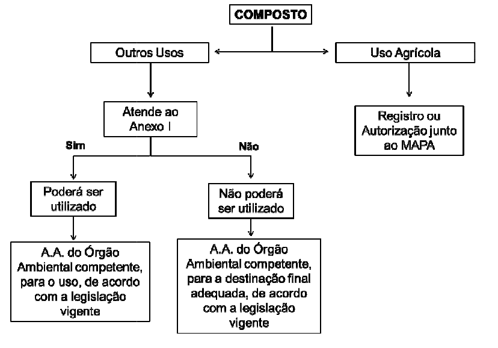

Resolução CEMA nº 90, de 3 de dezembro de 2013
Ementa: Estabelece condições, critérios e dá outras providências, para empreendimentos de compostagem de resíduos sólidos de origem urbana e de grandes geradores e para o uso do composto gerado.
Preâmbulo
O Presidente do Conselho Estadual do Meio Ambiente, no uso das suas atribuições conferidas pela Lei Estadual nº 7.978, de 30 de novembro de 1984, alterada pelas leis nº 8.289, de 07 de maio de 1986 e 8.485, de 03 de junho de 1987 e 11.352, de 13 de fevereiro de 1.996, pelo disposto no Decreto nº 4.447, de 12 de julho de 2.001; após deliberação no Plenário da 88ª Reunião Ordinária, realizada em 03 de dezembro de 2013, além das demais normas pertinentes e considerando, O disposto na Lei Estadual nº 7.109, de 17 de janeiro de 1979 e no seu Regulamento baixado pelo Decreto Estadual nº 857, de 10 de julho de 1979, na Lei Estadual nº 11.054, de 11 de agosto de 1995 e ainda, o contido na Lei Estadual nº 10.233, de 28 de dezembro de 1992, bem como o disposto, na Lei Federal nº 4.771, de 15 de setembro de 1965, na Lei Federal nº 6.938, de 31 de agosto de 1981 e no seu Regulamento baixado pelo Decreto Federal nº 99.274, de 06 de junho de 1990, e demais normas pertinentes, em especial, as Resoluções do Conselho Nacional do Meio Ambiente - CONAMA sob n° 001, de 23 de janeiro de 1986, n° 009, de 03 de dezembro de 1987, e n° 237, de 19 de dezembro de 1997; As atribuições e competências do Conselho Estadual do Meio Ambiente, estabelecida pelo Decreto Estadual nº 4.447 de 12 de Julho de 2001; Os objetivos institucionais do Instituto Ambiental do Paraná – Órgão Ambiental Competente - estabelecidos na Lei Estadual nº 10.066, de 27 de julho de 1992 (com as alterações da Lei Estadual nº 11.352, de 13 de fevereiro de 1996); A necessidade de dar efetividade aos princípios estabelecidos no Artigo 2º, incisos I, IV e IX, da Lei Federal n.º 6938/81, que dispõe sobre a Política Nacional do Meio Ambiente e na Declaração do Rio de Janeiro de 1992 (Princípio n.º 15); A Resolução SEMA n° 031, de 24 de agosto de 1998, que dispõe sobre o licenciamento ambiental, autorização ambiental, autorização florestal e anuência prévia para desmembramento e parcelamento de gleba rural; A Lei Estadual nº 12.493, 22 de janeiro de 1999, que estabelece princípios, procedimentos, normas e critérios referentes à geração, acondicionamento, armazenamento, coleta, transporte, tratamento e destinação final dos resíduos sólidos no Estado do Paraná, visando controle da poluição, da contaminação e a minimização de seus impactos ambientais; A Lei Federal nº 11.445, de 05 de janeiro de2007, que estabelece as diretrizes nacionais para o saneamento básico e inclui em seu Artigo 7º, inciso II, a compostagem como uma das atividades do serviço público de limpeza urbana e de manejo de resíduos sólidos urbanos; A Resolução CEMA nº 065, de 01 de julho de 2008, a qual dispõe sobre o licenciamento ambiental, estabelece critérios e procedimentos a serem adotados para as atividades poluidoras, degradadoras e/ou modificadoras do meio ambiente e adota outras providências;A Lei Federal nº 12.305, de 02 de Agosto de 2010, que institui a Política Nacional de Resíduos Sólidos, e que, em seu Artigo 9º estabelece como ordem de prioridade para a gestão e gerenciamento de resíduos sólidos a não geração, a redução, a reutilização, a reciclagem, o tratamento dos resíduos sólidos e a disposição final ambientalmente adequada dos rejeitos; O Decreto Federal 7.404, de 23 de dezembro de 2010, que regulamenta a Lei nº 12.305, de 2 de agosto de 2010, que institui a Política Nacional de Resíduos Sólidos, cria o Comitê Interministerial da Política Nacional de Resíduos Sólidos e o Comitê Orientador para a Implantação dos Sistemas de Logística Reversa, e dá outras providências; O Decreto Federal nº 4954, 14 de janeiro de 2004, que regulamenta a Lei Federal nº 6894, de 16 de dezembro de 1980, e estabelece os procedimentos junto ao Ministério da Agricultura, Pecuária e Abastecimento – MAPA; A Resolução CEMA nº 088, 27 de agosto de 2013, que estabelece critérios, procedimentos e tipologias para o licenciamento ambiental municipal de atividades, obras e empreendimentos que causem ou possam causar impacto de âmbito local e determina outras providências.
RESOLVE:
Art. 1º
Esta Resolução estabelece os critérios técnicos, legais e operacionais para o processo de compostagem de resíduos sólidos urbanos compostáveis e para o uso do composto no âmbito do estado do Paraná.
Art. 2º
Para os efeitos desta Resolução definem-se:
item 1
Área de Processamento da Compostagem - inclui os locais de recepção e armazenamento temporário dos resíduos in natura e o local de compostagem propriamente dito.
item 2
Chorume - líquido resultante da infiltração de águas pluviais no maciço de resíduos, da umidade dos resíduos e da água de constituição de resíduos orgânicos liberada durante sua decomposição, também denominado lixiviado ou percolado.
item 3
Composto de Resíduos Sólidos - produto obtido pela separação da parte orgânica dos resíduos sólidos e sua compostagem, podendo ser caracterizado como fertilizante orgânico e condicionador de solo para o uso agrícola ou para outros usos.
item 4
Grandes Geradores - estabelecimentos cuja geração diária de resíduos sólidos urbanos compostáveis é superior ao limite estabelecido pelo município para atendimento de coleta pública.
item 5
Núcleo Populacional - localidade sem a categoria de sede administrativa, mas com moradias, geralmente em torno de igreja ou capela, com pequeno comércio.
item 6
Processo de Compostagem - é a decomposição biológica da fração orgânica biodegradável dos resíduos, efetuado por uma população diversificada de organismos, em condições aeróbias controladas, desenvolvido em duas etapas distintas, uma de degradação ativa e outra de maturação.
item 7
Rejeitos - resíduos sólidos que, depois de esgotadas todas as possibilidades de tratamento e recuperação por processos tecnológicos disponíveis e economicamente viáveis, não apresentem outra possibilidade que não a disposição final ambientalmente adequada.
item 8
Resíduos Sólidos Urbanos Compostáveis - são aqueles representados pela fração orgânica provenientes de domicílios, serviços de limpeza urbana, pequenos estabelecimentos comerciais, industriais e de prestação de serviços, os resíduos de poda, jardinagem, exceto rejeitos, contemplados pelo serviço de coleta pública.
item 9
Sistema de Impermeabilização - elemento de proteção ambiental destinado a isolar os resíduos do solo natural de maneira a evitar a infiltração de águas pluviais e chorume.
item 10
Sistema de Isolamento Físico - dispositivos que têm por objetivo controlar o acesso de pessoas não autorizadas e animais à unidade, bem como diminuir ruídos, poeira e odores no entorno do empreendimento.
item 11
Uso agrícola - uso do composto em áreas destinadas à agricultura, inclusive silvicultura.
Art. 3º
Para a finalidade desta Resolução são considerados empreendimentos de compostagem todos aqueles que em sua produção utilizarem qualquer quantidade de matéria-prima oriunda de resíduos sólidos compostáveis de origem urbana e de grandes geradores, resultando em um composto de utilização segura.
§ 1º
Para a compostagem os resíduos deverão ser previamente separados na origem em, no mínimo, três frações: fração reciclável, fração orgânica e rejeitos; sendo obrigatória a existência de programa municipal de coleta seletiva que contemple metas progressivas para a separação.
§ 2º
Para a melhoria do processo de compostagem poderão ser utilizados materiais orgânicos como restos vegetais da agricultura, estercos e camas, bem como, materiais fornecedores de nutrientes minerais.
Art. 4º
Os geradores de resíduos sólidos deverão prever, em seus Planos de Gerenciamento de Resíduos Sólidos, a destinação da fração orgânica compostável para unidades de compostagem ou outras tecnologias de tratamento para a reciclagem da fração orgânica.
Parágrafo único
É vedada a destinação integral da fração orgânica compostável para aterros, a partir do mês de agosto do ano de 2014 no estado do Paraná.
Art. 5º
Os Resíduos Classe I, de acordo com NBR 10.004/04 ou outra que venha a substituí-la, que porventura estiverem misturados aos resíduos orgânicos, deverão ser previamente separados e devolvidos aos fabricantes, importadores, distribuidores, comerciantes ou, ainda, destinados a empresas devidamente licenciadas de acordo com o sistema de logística reversa.
Parágrafo único
Caso seja identificada a contaminação da massa de resíduos orgânicos, esta deverá ser descartada do processo de compostagem e destinada adequadamente.
Art. 6º
A área de processamento da compostagem deverá:
I
Contemplar todas as medidas técnicas necessárias para evitar incômodos à vizinhança, proliferação de vetores, contaminação do solo, subsolo, águas sub-superficiais e outras medidas constantes nos projetos apresentados.
II
Possuir sistema de coleta, contenção e tratamento dos efluentes eventualmente gerados, bem como a drenagem das águas pluviais.
III
Possuir impermeabilização de base com piso de concreto, geomembrana ou sistemas similares.
IV
Possuir sistema que proteja das intempéries os resíduos in natura, o material em compostagem e o composto.
V
Ser devidamente isolada, inclusive com barreira vegetal, e sinalizada, sendo proibido o acesso de pessoas não autorizadas e animais.
VI
Manter vias de acesso que permitam a circulação de veículos pesados, mesmo em situações climáticas adversas.
VII
Estar localizada no mínimo a 200 metros de distância de residências isoladas e vias de domínio público e a 400 metros de núcleos populacionais.
Parágrafo único
Em casos de empreendimentos já implantados, o Órgão Ambiental competente avaliará a necessidade de realocação do empreendimento ou adoção de medidas mitigadoras, conforme o caso, mediante as devidas justificativas técnicas.
Art. 7º
É proibido o lançamento de efluentes líquidos in natura, inclusive chorume, em corpos hídricos, bem como sua infiltração no solo.
Art. 8º
Na unidade de compostagem, o empreendedor deverá, periodicamente, monitorar e manter os registros dos parâmetros mínimos de controle operacional do processo: pH, temperatura, umidade e relação carbono/nitrogênio (C/N).
§ 1º
Caso seja verificado, por meio dos resultados das análises laboratoriais, que uma determinada amostra de composto orgânico não atenda aos parâmetros mínimos de qualidade exigidos, a unidade geradora deverá empreender os procedimentos necessários à correção dos problemas detectados.
§ 2º
Uma vez efetuada a correção, nova amostragem e análises deverão ser realizadas, de forma a determinar se o composto está em condições de ser utilizado.
Art. 9º
O período máximo de armazenamento dos resíduos sólidos in natura deverá ser controlado pelo empreendedor, visando a não geração de odores, de chorume, presença de vetores e incômodos à comunidade.
Art. 10
As emissões atmosféricas, tais como odores, deverão atender os critérios da legislação vigente.
Art. 11
Para a sua utilização o composto deverá seguir os critérios abaixo:
§ 1º
Para uso agrícola, o composto deverá atender ao Decreto Federal nº 4954/2004, que regulamenta a Lei Federal nº 6894/1980, e atos normativos complementares federais e estaduais em vigência.
§ 2º
Para outros usos, que não o agrícola:
I
Caso atendido o Anexo I, deverá ser requerida Autorização Ambiental ao Órgão Ambiental competente, para utilização do composto, de acordo com a legislação ambiental vigente.
II
Caso não atendido o Anexo I, o composto deverá ter disposição final adequada, devendo ser requerida Autorização Ambiental ao Órgão Ambiental competente, para essa disposição, de acordo com a legislação ambiental vigente.
II – Caso não atendido o Anexo I, o composto deverá ter disposição final adequada, devendo ser requerida Autorização Ambiental ao Órgão Ambiental competente, para essa disposição, de acordo com a legislação ambiental vigente.
§ 3º
Os critérios definidos neste artigo são apresentados esquematicamente no Anexo IV.
Art. 12
É proibida a utilização de composto de resíduos sólidos urbanos no cultivo de olerícolas, tubérculos e raízes, plantas medicinais e culturas inundadas, bem como nas demais culturas cuja parte comestível entre em contato com o solo.
Parágrafo único
Este composto poderá ser utilizado em formação de pastagem, desde que incorporado ao solo.
Art. 13
São de responsabilidade do empreendedor o gerenciamento e monitoramento da qualidade do composto produzido.
Art. 14
As unidades de compostagem deverão ser licenciadas conforme as modalidades estabelecidas no Quadro I e os processos de licenciamento deverão ser instruídos de acordo com a documentação listada no Anexo II.
As unidades de compostagem deverão ser licenciadas conforme as modalidades estabelecidas no Quadro I e os processos de licenciamento deverão ser instruídos de acordo com a documentação listada no Anexo II.
Quadro 1
QUADRO 1: Modalidades de licenciamento de empreendimentos de compostagem de acordo com o porte.
| TON/DIA | PORTE | MODALIDADE LICENÇA |
|---|---|---|
| Até 10 | Micro | LAS |
| Superior a 10 até 20 | Pequeno | LP, LI, LO |
| Superior a 20 até 30 | Médio | LP, LI, LO |
| Superior a 31 até 40 | Grande | LP, LI, LO |
| Superior a 40 | Excepcional | LP, LI, LO |
| Legenda: LAS: licença ambiental simplificada; LP: Licença prévia; LI: Licença de Instalação; LO: Licença de Operação; EIA: Estudo de Impacto Ambiental; RIMA: Relatório de Impacto Ambiental. | ||
§ 1º
O Licenciamento Prévio dos empreendimentos de porte excepcional está sujeito à apresentação de EIA/RIMA.
§ 2º
Na renovação da LO e da LAS, deverá ser apresentado Relatório de Automonitoramento, conforme Anexo III.
Art. 15
Em caso de necessidade, o Órgão Ambiental poderá solicitar outros documentos e/ou informações complementares do requerente ou de outras instituições envolvidas no licenciamento ambiental em questão.
Art. 16
O prazo de validade da Licença de Operação, bem como sua renovação será de, no máximo, quatro anos.
Art. 17
O Órgão Ambiental licenciador deverá fiscalizar o cumprimento desta Resolução.
Art. 18
Esta Resolução entra em vigor na data de sua publicação e revoga as disposições em contrário.
Fecho
Curitiba, 03 de dezembro de 2013.
Assinaturas
Luiz Eduardo Cheida – Secretário de Estado do Meio Ambiente e Recursos Hídricos; Luiz Eduardo Cheida – Presidente do Conselho Estadual do Meio Ambiente
ANEXOS
Tipos conforme as regras de anexos do README: tipo 3 (Anexos I, II e IV: conteúdo normativo) e tipo 1 (Anexo III: modelo). Não há anexo do tipo 2.
ANEXO I – LIMITES MÁXIMOS DE CONTAMINANTES ADMITIDOS NO COMPOSTO FINAL
(Tipo 3: conteúdo normativo. Citado em: Art. 11, § 2º, inciso I, Art. 11, § 2º, inciso II.)
Tabela 1 (sem título no original)
| Contaminantes Inorgânicos | Valor Máx. Permitido | |
|---|---|---|
| (*) | (#) | |
| Arsênio (mg/kg) | 20,0 | 20,0 |
| Cádmio (mg/kg) | 8,0 | 3,0 |
| Chumbo (mg/kg) | 300,0 | 150,0 |
| Cromo (mg/kg) | 500,0 | 200,0 |
| Mercúrio (mg/kg) | 2,5 | 1,0 |
| Níquel (mg/kg) | 175,0 | 70,0 |
| Selênio (mg/kg) | 80 | 80,0 |
| Agentes Patogênicos | Valor Máx. Permitido | |
| (*) | (#) | |
| Coliformes Termotolerantes (NMP/gMS) (*) (#) | <1000 | <1000 |
| Salmonellasp (*) (#) | Ausência em 10g MS | Ausência em 10g MS |
| Ovos Viáveis de Helmintos (ovos viáveis/4gST (*) (#) | <1,0 | <1,0 |
| Notas: MS =massa seca; (*) limites máximos de contaminantes admitidos em substrato para plantas e condicionadores de solo; (#) limites máximos de contaminantes admitidos em fertilizantes orgânicos. | ||
ANEXO II – RELAÇÃO DE DOCUMENTOS PARA O LICENCIAMENTO AMBIENTAL
#anexo-pendente
(Tipo 3: conteúdo normativo. Citado em: Art. 14, caput. O PDF enviado traz apenas as páginas 1 e 5 do anexo; ver Notas de transcrição.)
Os requerimentos de Licenciamento Ambiental (Licença Ambiental Simplificada, Licença Prévia, Licença de Instalação e Licença de Operação) dirigidos ao Diretor Presidente do órgão ambiental competente serão protocolados, desde que instruídos na forma prevista abaixo:
I. LICENÇA AMBIENTAL SIMPLIFICADA – LAS
a) Requerimento de Licenciamento Ambiental;
b) Cadastro Ambiental para Unidades de Compostagem de Resíduos;
c) Certidão do Município, quanto ao uso e ocupação do solo, conforme Anexo I da Resolução CEMA nº 065 de 01 de julho de 2008;
d) Matrícula ou Transcrição do Cartório de Registro de Imóveis em nome do requerente, e em caso de imóvel locado no nome do locador junto com o contrato de locação, no máximo de 90 (noventa) dias, ou Documento de propriedade ou justa posse rural ou conforme exigências constantes da Seção VI, art.46 a 57 da Resolução CEMA 065 de 01 de julho de 2008;
Observação: Nos casos devidamente justificados em que não seja possível a apresentação dos documentos especificados no item “d”, os mesmos deverão ser apresentados antes do inicio da operação da atividade ou empreendimento sob pena de cancelamento da licença Ambiental;
e) Quando o imóvel objeto deste licenciamento estiver localizado em área rural, deverá ser registrado no Sistema de Cadastro Ambiental Rural - SICAR-PR, de acordo com artigo 1º do Decreto Estadual nº 8680/13 e parágrafo 3º do artigo 29 da Lei Federal nº 12.651/12;
f) Cópia do Ato Constitutivo ou do Contrato Social (com última alteração);
g) Publicação de súmula do pedido de Licença Ambiental Simplificada em jornal de circulação regional e no Diário Oficial do Estado;
h) Comprovante de recolhimento da Taxa Ambiental (Ficha de Compensação Bancária);
i) Plano de Controle Ambiental da Unidade de Compostagem – PCA;
d) Publicação de recebimento de Licença de Operação em jornal de circulação regional e no Diário Oficial do Estado;
e) Publicação de pedido de Renovação de Licença de Operação em jornal de circulação regional e no Diário Oficial do Estado;
f) Comprovante de recolhimento da Taxa Ambiental (Ficha de Compensação Bancária);
g) Relatório de automonitoramento, conforme anexo III;
i) Relatório de situação atual de coleta seletiva, quando se tratar de resíduos sólidos da coleta municipal, de acordo com o Plano Municipal de Gestão Integrada de Resíduos Sólidos e programa de coleta seletiva;
j) Anotação de Responsabilidade Técnica referente à operação da Unidade.
ANEXO III – RELATÓRIO DE AUTOMONITORAMENTO
Modelo de relatório de automonitoramento. (Tipo 1: modelo, conteúdo não transcrito. Exigido em: Art. 14, § 2º; Anexo II, linha 16 (item g).)
ANEXO IV – DIAGRAMA ESQUEMÁTICO PARA A UTILIZAÇÃO DO COMPOSTO DE RESÍDUOS SÓLIDOS URBANOS
(Tipo 3: conteúdo normativo, em forma de fluxograma. Citado em: Art. 11, § 3º.)
Figura 1
Diagrama esquemático para a utilização do composto de resíduos sólidos urbanos

[Fluxograma: a caixa "COMPOSTO" se divide em duas: "Outros Usos" e "Uso Agrícola".]
Uso Agrícola: Registro ou Autorização junto ao MAPA
Outros Usos: pergunta "Atende ao Anexo I?"
Atende ao Anexo I? Sim: Poderá ser utilizado; A.A. do Órgão Ambiental competente, para o uso, de acordo com a legislação vigente
Atende ao Anexo I? Não: Não poderá ser utilizado; A.A. do Órgão Ambiental competente, para a destinação final adequada, de acordo com a legislação vigente
Relação com outras normas
Observação do conversor (não é texto normativo):
Revogada pelo Decreto Estadual nº 9.541/2025, art. 175, inciso I, alínea "c". O arquivo foi mantido como texto histórico (situacao: revogada), porque o texto antigo ainda pode reger processos protocolados antes da mudança.
O art. 18 revoga "as disposições em contrário" sem indicar normas (possível revogação tácita, a conferir pelo usuário).
O preâmbulo e o Anexo II citam a Resolução CEMA nº 65/2008, que não está na base; a Resolução SEMA nº 31/1998 também foi revogada pelo Decreto nº 9.541/2025, art. 175, inciso II, alínea "a".
O art. 11, § 1º remete ao Decreto Federal nº 4.954/2004 (regulamento da Lei nº 6.894/1980, fertilizantes), que não está na base.
Notas de transcrição
Fonte: PDF do corpo da resolução (portal do IAT/CEMA, com o cabeçalho "Resolução CEMA nº 090 - 03 de Dezembro de 2013") e quatro PDFs de anexos, enviados por Leo. O corpo foi comparado palavra por palavra com o texto extraído do PDF.
Rótulos: o PDF imprime "Art. 1º." e "§ 1º." com ponto, e traz os incisos com "I." ou "I –"; os rótulos desta base seguem o padrão e não alteram o texto.
Art. 2º: o caput traz onze definições sem numeração (Área de Processamento da Compostagem a Uso agrícola). Foram numeradas como itens (art2_cpt_ite1 a art2_cpt_ite11) só para dar ID; o texto de cada definição está como no original.
Art. 11, § 2º: o original repete o inciso II (primeiro dentro da lista, depois em parágrafo solto, com o mesmo texto). A repetição foi mantida como parágrafo de continuação, sem ID próprio.
Art. 14: o original repete o texto do caput (a frase "As unidades de compostagem deverão ser licenciadas ..." aparece duas vezes seguidas). A repetição foi mantida como parágrafo de continuação, sem ID.
Art. 14, Quadro 1: o caput remete a "Quadro I", mas o quadro se intitula "QUADRO 1"; a remissão aponta para o quadro. A faixa do porte Grande começa em "Superior a 31", enquanto o porte Médio termina em "até 30" (lacuna entre 30 e 31 t/dia, no original).
Art. 14: a coluna "TON/DIA" e as demais colunas do quadro foram desdobradas em linhas (art14_tab1_lin1 a lin5); a legenda do quadro está em art14_tab1_obs.
Anexo I: o quadro não tem título no original. A célula de cabeçalho "Valor Máx. Permitido" foi desdobrada em duas colunas, "()" e "(#)", conforme as notas do próprio anexo. O valor do selênio em () está "80" no original, e "80,0" em (#).
Anexo II (incompleto): o PDF enviado traz apenas as páginas 1 e 5 do anexo. As linhas 1 a 12 vêm da página 1 (itens da Licença Ambiental Simplificada, a) a i)); as linhas 13 a 18 vêm da página 5 (alíneas d), e), f), g), i) e j) de uma lista de renovação ou operação cujo título está nas páginas ausentes). As páginas 2 a 4 não foram enviadas; por isso o anexo recebeu #anexo-pendente.
Anexo III: modelo de relatório de automonitoramento (tipo 1). Só o nome foi registrado.
Anexo IV: diagrama (fluxograma). A figura está em anexos/imagens/resolucao-cema-90-2013-anexo4-fig1.png, e as linhas anexo4_lin1 a lin5 descrevem seu conteúdo (descrição do conversor).
Preâmbulo: "de2007" (Lei Federal nº 11.445) e "providências;A Lei Federal" (falta espaço) estão como no original.